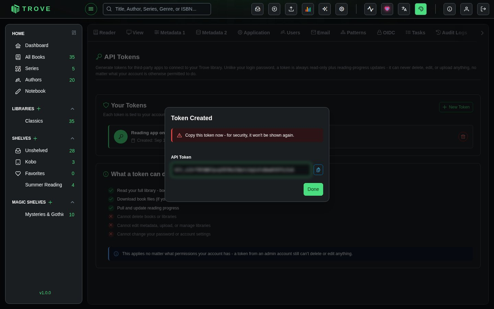
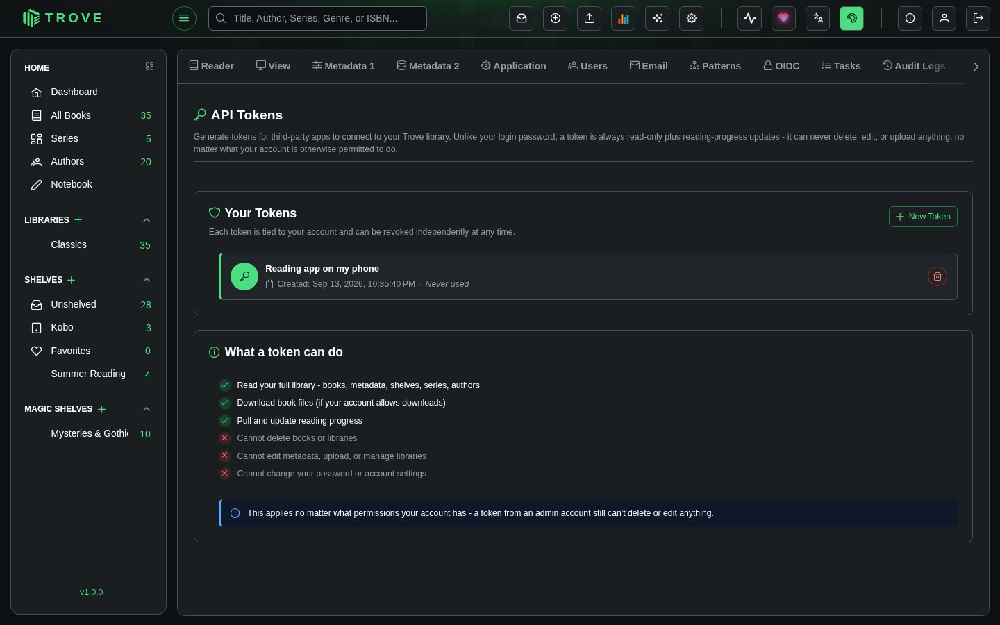

API tokens
An API token lets another app, such as a companion reading app or your own script, use your Trove library without your password. Tokens can only read and update reading progress, whatever your own account is allowed to do.
Creating a token
- Go to Settings › API Tokens and click New Token.
- Give it a name that says where it's used, such as "Reading app on my phone". The name isn't secret.
- Click Create, then Copy the token and paste it into the app.

What a token can do

| Can | Can't |
|---|---|
| Read your library: books, metadata, shelves, series, authors | Delete books or libraries |
| Download book files, if your account may download | Edit metadata, upload, or manage libraries |
| Read and update reading progress | Change your password or account settings |
A token sees exactly what you see (your libraries, and your content restrictions apply), and this holds even for a token made by an admin.
Using a token
Apps send the token in the Authorization header. Tokens start with blt_:
curl -H "Authorization: Bearer blt_…" https://trove.example.com/api/v1/booksRevoking a token
Each token shows when it was created and last used. The bin button revokes it; any app using it loses access straight away. Revoke tokens you no longer use, and any you think may have leaked.